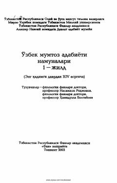

OMO'zbek mumtoz adabiyotining qadimgi davridan XIV asrgacha bo'lgan namunalari to'plami.
Ushbu to'plam o'zbek mumtoz adabiyoti tarixining eng qadimgi davridan XIV asrgacha bo'lgan davrini o'z ichiga oladi. Kitobda qadimgi turkiy adabiyot namunalari, afsonalar, diniy-falsafiy oqimlar va ilk yozma yodgorliklar ilmiy-tarixiy asosda tahlil qilingan.